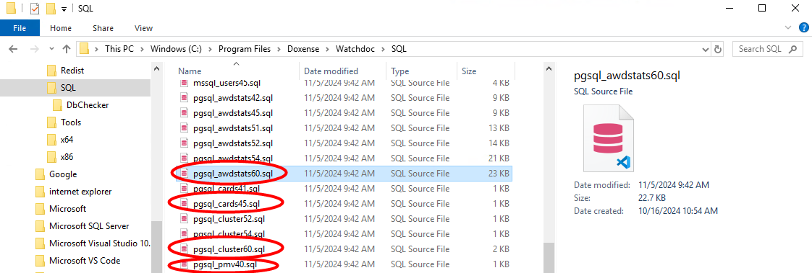
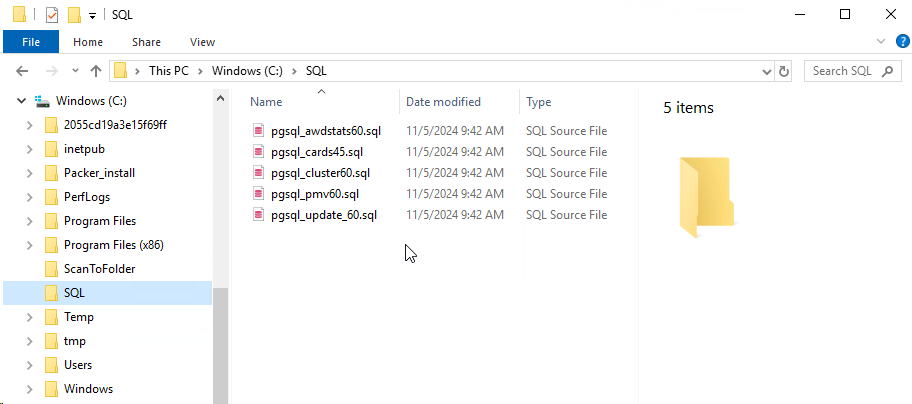
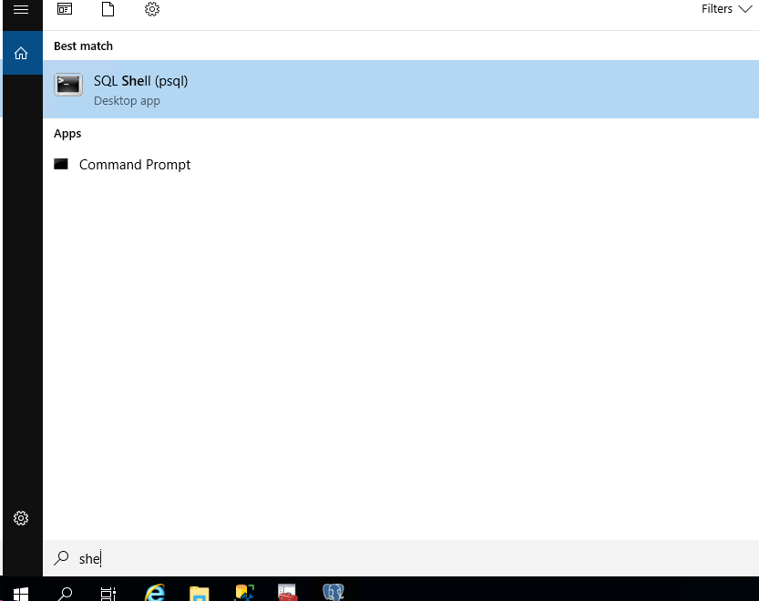
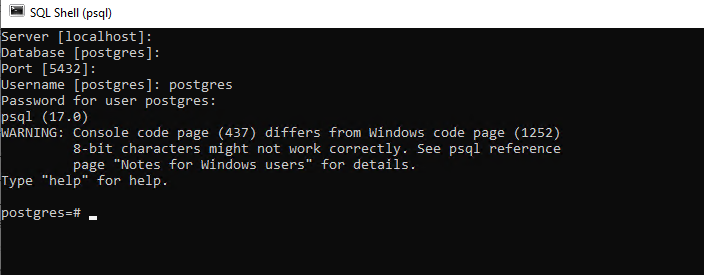
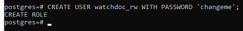
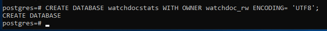
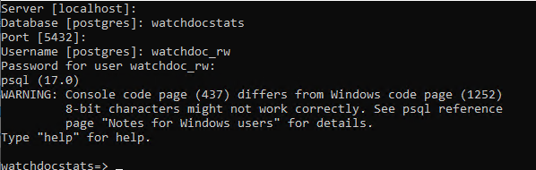
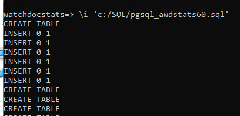
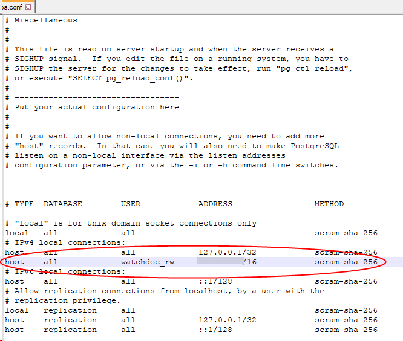

Prérequis
Avant de créer la base PostgreSQL, procédez aux opérations suivantes :
-
installez Postgre SQL sur le serveur de base de données ;
-
installezs un outil d'administration PostgreSQL (comme pgadmin, par exemple) ;
-
sur le serveur de la base de données, ouvrez le port 5432 ;
-
assurez-vous que tous les serveurs ont le droit d'accéder au serveur de la base de données via le port 5432.
Procédure
Copier les fichiers de création de tables
Il est nécessaire de copier les fichiers de création de tables sur le serveur de la base de données PostgreSQL.
-
En tant qu'administrateur, sur le serveur hébergeant Watchdoc, rendez-vous dans le dossier Watchdoc ;
-
rendez-vous dans le dossier C:\Program Files\Doxense\Watchdoc\SQL et copiez les fichiers suivants correspondants à votre version Watchdoc :
-
pgsql_awdstats[n°version].sql = base de statistiques Watchdoc
-
pgsql_cards45.sql = Base cards
-
pgsql_cluster[n°version].sql = Base interserveur
-
pgsql_pmv40.sql = Base Quota

-
dans le serveur sur lequel vous souhaitez créer votre base de données, sous c:, créez un dossier SQL :
-
dans ce dossier, collez les fichiers précédemment copiés :

Accéder au serveur
-
En tant qu'administrateur, accédez au serveur sur lequel est hébergé PostgreSQL ;
-
lancez SQL Shell :

-
connectez-vous au serveur sur lequel vous souhaitez créer la base de données en indiquant les informations saisies lors de l'installation de PostgreSQL :

Créer un utilisateur
-
Créez un utilisateur à l'aide de la commande suivante :
CREATE USER nom_de_lutilisateurGR WITH PASSWORD 'Mot_de_passe';
Créer une base
-
Créez la base en saisissant la commande suivante :
CREATE DATABASE watchdocstats WITH OWNER watchdoc_rw ENCODING = 'UTF8'
Attention : pour les collations, veuillez vous référer à la documentation dédiée (en fonction de l'environnement Windows ou Linux : https://www.postgresql.org/docs/current/multibyte.html
-
Donnez les accès à Watchdoc à l'aide des commandes suivantes :
GRANT CONNECT ON DATABASE "watchdocstats" TO watchdoc_rw;
GRANT USAGE ON SCHEMA public TO watchdoc_rw;
GRANT SELECT,INSERT,UPDATE,DELETE ON ALL TABLES IN SCHEMA public TO watchdoc_rw;
ALTER DEFAULT PRIVILEGES IN SCHEMA public GRANT SELECT,INSERT,UPDATE,DELETE ON TABLES TO watchdoc_rw;
Créer les tables
-
Déconnectez- vous et reconnectez-vous avec le compte Watchdoc nouvellement créé pour vérifier qu'il a bien été enregistré ;

\\i
-
Lancez la commande suivante :
\i 'c:/SQL/pgsql_awdstats60.sql'En fonction du type de base dont vous avez besoin, exécutez les différents scripts suivants :
pgsql_awdstats60.sql = base de statistiques Watchdocpgsql_cards45.sql = Base cardspgsql_cluster60.sql = Base interserveurpgsql_pmv60.sql = Base Quota

Modification d’un fichier de configuration
S'il s'agit d'une nouvelle base, il est nécessaire de modifier le fichier de configuration (hba.conf) pour autoriser les connexions à distance avec le nouvel utilisateur créé :
-
pour Windows, en tant qu'administrateur, éditez le fichier C:\Program Files\PostgreSQL\17\data\hba.conf
-
pour Linux, en tant qu'administrateur, éditez le fichier Linux /pgsql/data/hba.conf
-
à la fin du fichier, ajoutez une ligne dans la catégorie #IPv4 local connections en indiquant :
-
l'adresse IP du serveur de base de données :validez que le CIDR (en gras ci dessous), regroupe bien la totalité des serveurs WATCHDOC ou mettre 0.0.0.0/0 (aucun blocage).
-
host all watchdoc_rw 0.0.0.0/0 trust
-
host all watchdoc_rw ::1/128 trust
-
-
le nom de l'utilisateur créé : vérifiez que le compte (en noir ci dessous)est le compte configuré dans Watchdoc
-
host all watchdoc_rw 0.0.0.0/0 trust
-
host all watchdoc_rw ::1/128 trust
-
-
-
reproduisez cette modification sur tous les serveurs hébergeant une base de données PostgreSQL :

-
(cf. plus d'information dans https://docs.postgresql.fr/12/auth-pg-hba-conf.html)